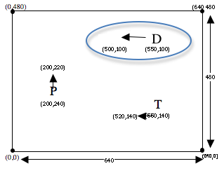

Los estándares con el prefijo BS son específicos de Bootstrap; Otros son del Common Core. Pase el mouse sobre cada estándar para ver sus correspondientes declaraciones de evidencia. Nuestra Documento de estándares Muestra qué unidades cubren cada estándar.
F-IF.1-3: The student uses function notation to describe, evaluate, and interpret functions in terms of domain and range
evaluation of functions using function notation for inputs in their domains
F-LE.5: The student interprets expressions for functions in terms of the situations they model
interpretation of the parameters in a linear or exponential function in terms of a context
BS-DR.2: The student can derive test cases for a given contract and purpose statement
given a Contract and a Purpose Statement, write multiple examples or test cases
given multiple examples, identify patterns in order to label and name the variables
BS-DR.3: Given multiple test cases, the student can define a function
given examples and labeled variable(s), define the function
BS-IDE: The student is familiar with using a REPL, entering expressions properly, and interpreting error messages
look to error messages as a way of diagnosing syntax errors
BS-PL.1: The student is familiar with declaring values and applying built-in functions using the programming language
interpreting a function application and identifying its arguments
BS-PL.2: The student is comfortable using and writing Contracts for built-in functions
representing a function’s input and output using a contract
using a function by refering to its contract
BS-PL.3: The student is able to use the syntax of the programming language to define values and functions
defining and using functions
Duración: 70 Minutos
Glosario:
contrato: una declaración del nombre, dominio y rango de una función
declaración de propósito: una breve descripción de lo que hace una función
ejemplos: muestra el uso de una función en entradas específicas y el cálculo que debe realizar la función en esas entradas
variable: algo que cambia
Materiales:
Preparación:
Tipos
Funciones
Values
Number
+ - * / sqr sqrt expt
1 ,4 ,44.6
String
string-append string-length
"hello"
Image
rectangle circle triangle ellipse star scale rotate put-image
(circle 25 "solid" "red")
Cazando Errores
Repaso
Objetivos de aprendizaje
Gain more experience understanding and correcting programming errors
Declaraciones de evidencia
Students will be able to read error messages for basic syntax errors
Students will be able to edit programs to eliminate basic syntax errors
Resultados del Producto
Materiales
Lapiceros/lápices para los estudiantes, marcadores de pizarra para profesores
Cartel de clase (Lista de reglas, tabla de lenguaje, calendario del curso)
Tabla de Lenguaje (Vea abajo)
"Bug Hunting" [Bugs.rkt de source-files.zip | WeScheme] precargado en las máquinas de los estudiantes
Preparación
Los estudiantes están registrados en WeScheme.org, o han abierto DrRacket.
Cazando Errores(Tiempo 20 mins)
Cazando ErroresDepurando (buscando y corrigiendo problemas en el código) es una parte importante de la programación, así que es una buena idea practicar buscando errores en código.
Abre el programa Bug Hunting en una nueva ventana, y observa si puedes encontrar errores en cada expresión. Haz clic en "Run" y lee el mensaje de error cuidadosamente. Después de corregir cada uno, hacer clic en Run te mostrará el mensaje de error del siguiente problema.
Make sure students understand that the goal is not to FIX the bugs, but rather just to find them.
Movimiento de peligro y objetivo
Repaso
Objetivos de aprendizaje
Students learn to move game elements through functions that compute attributes in one frame from attributes in the previous frame
Declaraciones de evidencia
Students will be able to write functions that take in one dimension of a game element’s coordinate and produce the next coordinate value in that dimension
Students will learn how to control speed of movement through functions
Resultados del Producto
Los estudiantes agregarán movimiento al peligro (danger) de sus juegos
Los estudiantes agregarán movimiento al objetivo (target) de sus juegos
Materiales
Lapiceros/lápices para los estudiantes, marcadores de pizarra para profesores
Movimiento de peligro y objetivo(Tiempo 30 minutos)
Movimiento de peligro y objetivoLas dimensiones de tu videojuego son 640x480, y cada personaje es ubicado en un conjunto de coordenadas (x,y). Tu Objetivo (T), Jugador (P) y Peligro (D) cada movimiento sobre el eje x- o y-, mueve las coordenadas x- o y- de acuerdo a una función animada. Esas funciones de animación empezaran de forma simple: Ellas toman la coordenada x- o y- actual, y producen la siguiente coordenada x- o y-. Después, tú podrás adaptarlas para crear desplazamientos más sofisticados, usando ambas coordenadas x- y y-.
Ve a la Página 1 de tu libro de trabajo hasta la sección update-danger.
Lee el problema de palabra cuidadosamente, y presta atención a qué toma la función.
Llena el Contrato y Declaración de propósito para la función, usando lo que encerraste para ayudarte a elegir el Dominio.
Escribe dos Ejemplos para la función.
Encierra y etiqueta lo que varía entre esos ejemplos, y etiquétalo con un nombre de variable.
Define la función.
If students are working on their own, check their work to make sure every last step is being executed correctly. If the class is working through it together, be sure to ask students to justify each step in terms of a prior step.
Tip: tell students that they must get your permission before typing in their code, then use that expectation to check each student’s paper carefully.
Poniendo todo eso unido, update-danger es definido por:
(Nota: Tú podrías tener diferentes ejemplos o nombres de variable.)
Abre tu archivo de juego guardado y desplaza hasta que encuentres la definición para update-danger. ¿Es correcto el contrato?
Asegúrate que coincida con lo que tienes en tu libro de trabajo, agrega tus ejemplos, y corrige la definición. ¡Cuando haces clic en "Run" tú deberías ver tu peligro volar a través de la pantalla!
Ahora es tiempo de animar el objetivo, el cual se mueve en la dirección opuesta.
Ve a la Página 1 de tu libro de trabajo hasta la sección update-target.
Lee el problema de palabra cuidadosamente, y presta atención a qué toma la función.
Llena el Contrato y Declaración de Propósito para la función, usando lo que encerraste para ayudarte a elegir el Dominio.
Escribe dos Ejemplos para la función.
Encierra y etiqueta lo que varía entre esos ejemplos, y etiquétalo con un nombre de variable.
Define la función.
For students who finish these quickly, have them experiment with making the Target and Danger move faster or slower, or change direction altogether. Be sure that they are typing in Examples, and updating those examples to keep up with any changes to their definition.
Movimiento de Proyectil (Opcional)
Repaso
OPTIONAL: students discover that the "mystery" definitions in the game are actually used to add projetiles, and adapt these definitions to add a custom projectile and projectile animation to their game.
Objetivos de aprendizaje
Students learn to move game elements through functions that compute attributes in one frame from attributes in the previous frame
Declaraciones de evidencia
Students will be able to write functions that take in one dimension of a game element’s coordinate and produce the next coordinate value in that dimension
Resultados del Producto
Los estudiantes agregarán movimiento al proyectil de sus juegos
Materiales
Preparación
Movimiento de Proyectil (Opcional)(Tiempo 15 minutos)
Movimiento de Proyectil (Opcional)Esta plantilla de juego también tiene un objeto misterioso, el cual es definido al final de la pantalla. El "Misterio" es realmente un proyectil, el cual será ubicado en la posición del jugador cada vez que la barra espaciadora sea presionada. Como puedes ver, el mystery es definido para ser una pequeña estrella gris, pero tu puedes cambiarla por la imagen que desees. Si tienes un juego donde el jugador es un mono, puedes cambiar la definición de mystery para que sea la imagen de una banana, para que el mono tire bananas cada vez que presiones la barra espaciadora. Un juego que se desarrolla en el espacio podría tener un alíen tirando cristales, o un juego deportivo podría tratarse de un atleta lanzando un balón.
Cambia la definición de mystery, para que tu proyectil luzca de la forma que desees. No olvides usar scale y rotate si tienes que cambiar ligeramente la imagen.
Usa las instrucciones de diseño para escribir update-mystery, para que el proyectil se mueva de izquierda a derecha. Pista: esto será muy parecido a tus soluciones para update-danger y update-target!
Be careful when introducing Projectiles into the game! Many students will actually be less creative when using them, as it will automatically push their mindset towards the standards "shoot the bad guy" format. Many teachers choose to skip this section entirely, or else add it after the games are complete.
Concluyendo
Repaso
Objetivos de aprendizaje
Declaraciones de evidencia
Resultados del Producto
Materiales
Preparación
Concluyendo(Tiempo 5 minutos)
Concluyendo¡Felicidades - tienes los inicios de un juego funcional! Sin embargo, varias cosas siguen incompletas:
El jugador no se mueve
Cuando el objetivo y el peligro se mueven fuera de la pantalla, nunca regresan
Nada sucede cuando el jugador colisiona con el peligro o el objetivo
Las siguientes lecciones incrementarán lo que conoces sobre las funciones, de tal manera que puedas definir funciones para implementar en cada una de esas características.
Have students volunteer what they learned in this lesson
Reward behaviors that you value: teamwork, note-taking, engagement, etc